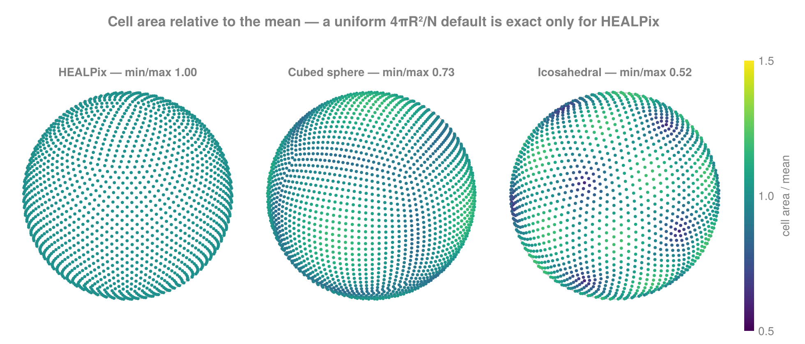
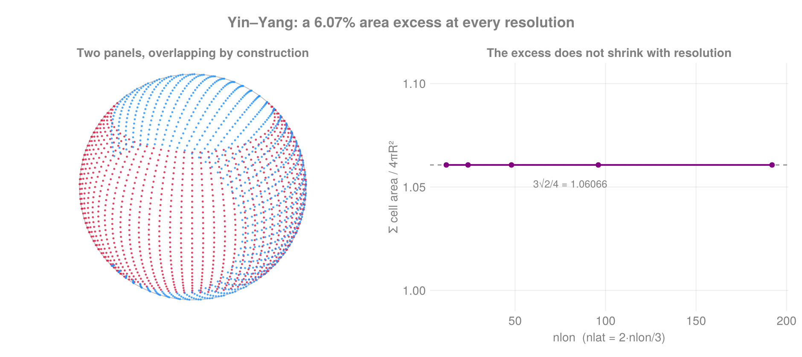

Grids
A grid answers: how is the data stored? It pairs a geometry with coordinates, a per-cell measure and an activity mask.
| type | coordinates | use |
|---|---|---|
StructuredGrid | one 1-D axis per direction | rectilinear: lat–lon, any tensor-product sampling |
CurvilinearGrid | one N-D array per direction | logically rectangular, geometrically warped |
UnstructuredGrid | one value per node, plus CSR neighbours | HEALPix, icosahedral, cubed sphere, scattered |
Building one
using FlowGeometries: FlowGeometries as FG
# From a sampling — the usual route
grid = FG.Connectivity.structured_grid(FG.SphericalSampling.ClenshawCurtisSampling(), 64)
g = FG.Connectivity.unstructured_grid(FG.SphericalSampling.HEALPixSampling(16))
# Or directly, in any number of dimensions; the mask is optional
sg = FG.Grids.StructuredGrid(FG.Geometry.SphericalGeometry(), λaxis, φaxis, mask)
cg = FG.Grids.CurvilinearGrid(FG.Geometry.SphericalGeometry(), λ2d, φ2d, mask)
g4 = FG.Grids.StructuredGrid(FG.Geometry.CartesianGeometry(),
0:1.0:3, 0:1.0:3, 0:1.0:3, 0:1.0:3) # 4-D, all active
size(g4)(4, 4, 4, 4)The common interface
Everything below works on all three architectures:
out = zeros(2)
FG.Grids.coords(grid, i, j) # (λ = …, φ = …) or (x = …, y = …)
FG.Grids.coords!(out, grid, i, j) # into your buffer
FG.Grids.coords(NTuple{2,Float64}, grid, i, j) # a specific storage type
FG.Grids.measure(grid, i, j) # cell area / volume / control-volume size
FG.Grids.isactive(grid, i, j) # participates in the domain?
collect(FG.Grids.neighbors(grid, i, j)) # lazy iterator over neighbour indices
size(grid), length(grid), FG.Grids.size_tuple(grid)
FG.Grids.isperiodic(grid, 1), FG.Grids.period(grid, 1)(true, 6.283185307179586)Coordinates are also reachable by their geometry-correct names — grid.λ, grid.φ on a sphere; grid.x, grid.y on a plane.
Cell measure is stored factored
On a rectilinear grid every measure this package supports is a product of one factor per axis: Cartesian Δx·Δy·Δz, spherical R²cosφ·Δλ·Δφ = (Δλ)·(R²cosφ·Δφ). So a StructuredGrid stores the factors, not the ∏ Nᵈ products.
m = FG.Grids.measure(grid) # a SeparableMeasure — a real AbstractArray
m[3, 5] # indexes exactly like the dense outer product
sum(m) # ∏ᵈ ∑ᵢ wᵈᵢ — O(∑ Nᵈ), not O(∏ Nᵈ)
FG.Grids.measure_factors(grid) # the per-axis factors, or `nothing`
FG.Grids.measure_array(grid) # materialize densely, if you really need it127×64 Matrix{Float64}:
2.41912e9 7.25153e9 1.20665e10 … 1.20665e10 7.25153e9 2.41912e9
2.41912e9 7.25153e9 1.20665e10 1.20665e10 7.25153e9 2.41912e9
2.41912e9 7.25153e9 1.20665e10 1.20665e10 7.25153e9 2.41912e9
2.41912e9 7.25153e9 1.20665e10 1.20665e10 7.25153e9 2.41912e9
2.41912e9 7.25153e9 1.20665e10 1.20665e10 7.25153e9 2.41912e9
2.41912e9 7.25153e9 1.20665e10 … 1.20665e10 7.25153e9 2.41912e9
2.41912e9 7.25153e9 1.20665e10 1.20665e10 7.25153e9 2.41912e9
2.41912e9 7.25153e9 1.20665e10 1.20665e10 7.25153e9 2.41912e9
2.41912e9 7.25153e9 1.20665e10 1.20665e10 7.25153e9 2.41912e9
2.41912e9 7.25153e9 1.20665e10 1.20665e10 7.25153e9 2.41912e9
⋮ ⋱
2.41912e9 7.25153e9 1.20665e10 1.20665e10 7.25153e9 2.41912e9
2.41912e9 7.25153e9 1.20665e10 1.20665e10 7.25153e9 2.41912e9
2.41912e9 7.25153e9 1.20665e10 … 1.20665e10 7.25153e9 2.41912e9
2.41912e9 7.25153e9 1.20665e10 1.20665e10 7.25153e9 2.41912e9
2.41912e9 7.25153e9 1.20665e10 1.20665e10 7.25153e9 2.41912e9
2.41912e9 7.25153e9 1.20665e10 1.20665e10 7.25153e9 2.41912e9
2.41912e9 7.25153e9 1.20665e10 1.20665e10 7.25153e9 2.41912e9
2.41912e9 7.25153e9 1.20665e10 … 1.20665e10 7.25153e9 2.41912e9
2.41912e9 7.25153e9 1.20665e10 1.20665e10 7.25153e9 2.41912e9Indexing, broadcasting and collect behave exactly as for the dense array — only the storage differs, and the values are bit-identical. At 2000² that is 61.0 MiB → 0.046 MiB, and it is faster on every access pattern measured, because the factors stay in cache while a 61 MiB array is DRAM-bound. See Performance.
Operations that keep the measure a product stay factored, so a unit conversion does not undo the saving: scaling, a multiplicative map (abs, abs2, sqrt, inv), and a factor-wise product or quotient of two measures.
km² = m ./ 1e6
typeof(km²).name.name, Base.summarysize(km²), sum(km²) ≈ sum(m) / 1e6(:SeparableMeasure, 1624, true)Anything else materializes — correct, just dense. exp is the clean example: it is not multiplicative, so exp(∏wᵈ) ≠ ∏exp(wᵈ) and there is no factored form to keep. A negative scale also materializes deliberately: non-negative factors are an invariant the findmax/findmin shortcut relies on.
typeof(exp.(m)).name.name, typeof((-1.0) .* m).name.name(:Array, :Array)sum being O(∑Nᵈ) is also what stops show from adding eight million numbers to print one line.
Masks
FG.Grids.mask(grid) # the mask array
FG.Grids.isactive(grid, i, j) # false = excluded (land, say)trueWhen every cell participates the mask is AllActive, which stores its size and nothing else — getindex folds to a constant and count is length without a scan. Pass a real BitArray or Array{Bool} when you need to exclude cells.
Curvilinear corners
CurvilinearGrid stores cell-vertex arrays as well as centres, and computes exact quadrilateral areas from them — the spherical excess of the two triangles through the four corner directions on a sphere, the shoelace area on a plane.
cg2 = FG.Grids.CurvilinearGrid(geo, λ2d, φ2d, mask; x_corner = λc, y_corner = φc)
size(FG.Grids.corners(cg2, 1)), FG.Grids.corner_coords(cg2, i, j)((64, 33), (λ = 0.14959965017094254, φ = 1.1780972450961724))Supply x_corner/y_corner when your source model ships its own cell-vertex grid; otherwise they are reconstructed from the centres, which needs at least a 2×2 grid.
A curvilinear grid takes any number of directions — one N-D array each, mask last. Beyond 2-D the cell measure is yours to pass: the corner-area kernel is an exact-quadrilateral algorithm, not the 2-D case of an N-D one, so asking for a 3-D measure it cannot compute is an error rather than a number from the wrong formula.
cart = FG.Geometry.CartesianGeometry()
X = [x for x in 0.0:1.0:3.0, _ in 1:3, _ in 1:2]
Y = [y for _ in 1:4, y in 0.0:2.0:4.0, _ in 1:2]
Z = [z for _ in 1:4, _ in 1:3, z in 0.0:0.5:0.5]
cg3 = FG.Grids.CurvilinearGrid(cart, X, Y, Z, fill(1.0, 4, 3, 2), trues(4, 3, 2))
size(cg3), FG.Grids.coordinate_names(cg3), FG.Grids.coords(cg3, 2, 3, 2)((4, 3, 2), (:x, :y, :z), (x = 1.0, y = 4.0, z = 0.5))The measure goes either before the mask, as above, or as the measure keyword — the same array either way:
FG.Grids.measure(FG.Grids.CurvilinearGrid(cart, X, Y, Z, trues(4, 3, 2);
measure = fill(1.0, 4, 3, 2))) ==
FG.Grids.measure(cg3)trueNode grids generalize the same way, with the coordinates as a tuple — a run of vectors cannot say how many of them are coordinates, where a curvilinear grid counts them from ndims(mask):
nodes = FG.Grids.UnstructuredGrid(cart, (rand(6), rand(6), rand(6)), ones(6), trues(6))
FG.Grids.coordinate_names(nodes), FG.Grids.coords(nodes, 4)((:x, :y, :z), (x = 0.39659743626621113, y = 0.31285863492153543, z = 0.050495805026807505))Cell areas on unstructured grids
unstructured_grid computes exact cell areas in closed form, dispatched on the sampling — never a uniform 4πR²/N fallback, which is right only for equal-area samplings and silently wrong elsewhere (icosahedral dual cells span a min/max ratio of 0.52).
| sampling | default areas |
|---|---|
| HEALPix | uniform 4πR²/N — exact by construction |
| cubed sphere | spherical excess of each cell's own panel quadrilateral |
| icosahedral | true dual-cell areas, from the mesh's own triangulation |
| Yin–Yang | lat–lon patch area, R²Δλ·2sin(Δφ/2)·cosφ |
| arbitrary points | Voronoi areas, via the Quickhull or DelaunayTriangulation extension |

Only HEALPix is one flat colour. The dark spots on the icosahedral panel are its twelve pentagons — the smallest cells on the mesh, and the reason a uniform default is off by nearly a factor of two between the largest and smallest cell there.
All four closed forms sum to 4πR² to machine precision and need no optional dependency. Pass areas = … to override any of them.

The two panels overlap by construction, so their cell areas sum to 3√2πR² — 6.07% more than the sphere, at every resolution. That excess is the grid's real geometry, not a discretisation error. Integrating over both panels needs a partition-of-unity weight for the shared region, which is a modelling choice made on top of these areas.